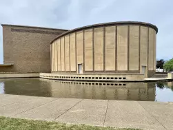
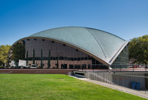
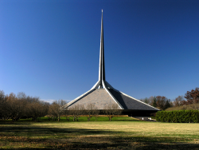
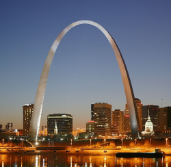

Kleinhans Music Hall, Buffalo
1938

Christ Church Lutheran, Minneapolis
1948
Kresge Auditorium et chapelle du MIT, Cambridge
1956

Patinoire David S. Ingalls, université Yale
1958
Bell Labs Holmdel Complex, Holmdel
1962
Terminal de l'aéroport international de Washington-Dulles
1962
North Christian Church, Columbus
1964

Gateway Arch, Jefferson National Expansion Memorial, Saint-Louis
1965
